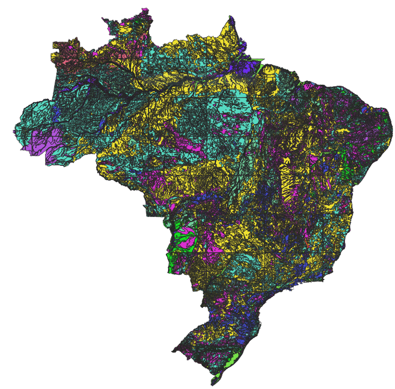

4.6. Overlay de Mapas
4.6.1. Carga de Dados - Mapa Pedológico
Considere o conjunto ESRI Shapefile mostrado na Tabela 4.8, que contem o mapa pedológico do Brazil, abo de referência 2017. Faça a carga desse conjunto de dados de acordo com as informações apresentadas nessa tabela.
 |
Mapa Pedológico – 2017
Tipo Geométrico: MultiPolygon
|
Dica
Para converter este conjunto de dados do formato ESRI Shapefile para SQL utilizando o shp2pgsql, use o seguinte comando:
shp2pgsql -c -g "geom" -s 4674 -i -I -t "2D" -W UTF-8 pedologia_2017.shp public.pedologia > pedologia.sql
Dica
Para carregar o arquivo pedologia.sql para um banco de dados PostgreSQL, utilize o psql:
psql -h localhost -p 5432 -d bdgeo -U postgres -f pedologia.sql
4.6.2. Consulta 1
Consulta: Quais os tipos de solo do Estado do Tocantins?
{kind=link}
Figura 4.27 - Overlay - Intersecção entre Limite Estadual do Tocantins e o Mapa Pedológico.
4.6.3. Consulta 2
Consulta: Qual o tipo de solo predominante em Ouro Preto?
{kind=link}
Figura 4.28 - Overlay - Intersecção entre limite municipal de Ouro Preto e o Mapa Pedológico.
4.6.4. Consulta 3
Consulta: Recuperar os trechos de rodovia no Estado do Tocantins com o tipo de revestimento “Pavimentado”?
{kind=link}
Figura 4.29 - Overlay - Intersecção entre trechos rodoviários e o limite estadual de Tocantins.
4.6.5. Consulta 4
Consulta: Quantos KM de rodovia existem no Estado do Tocantins com o tipo de revestimento “Pavimentado”?